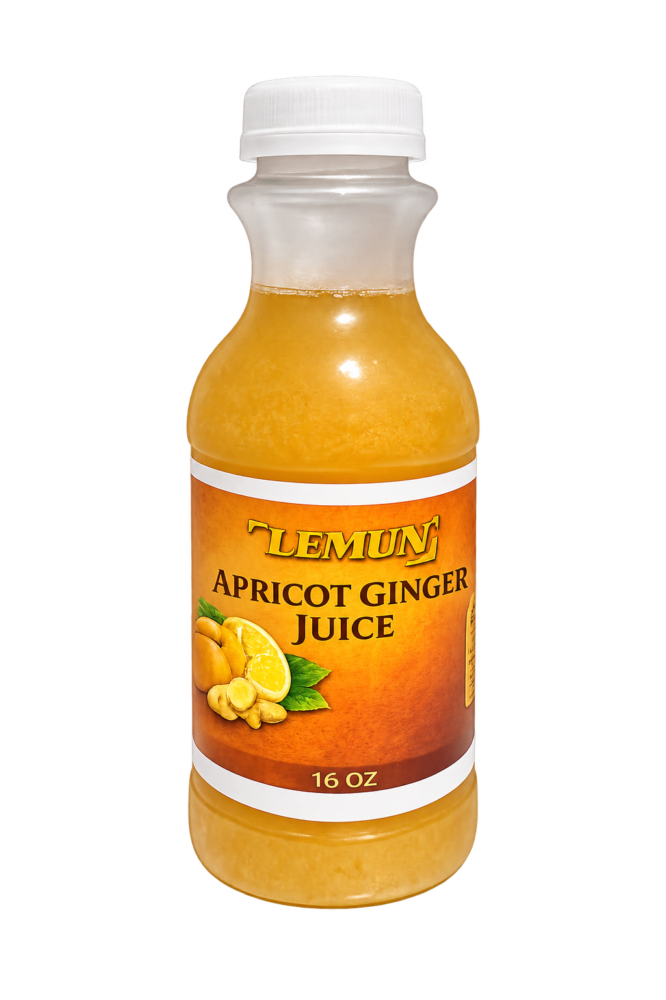
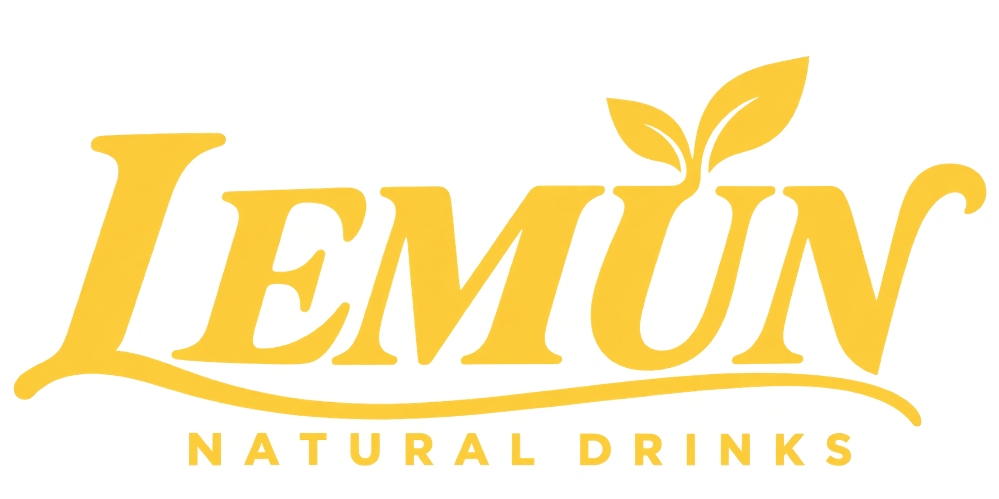
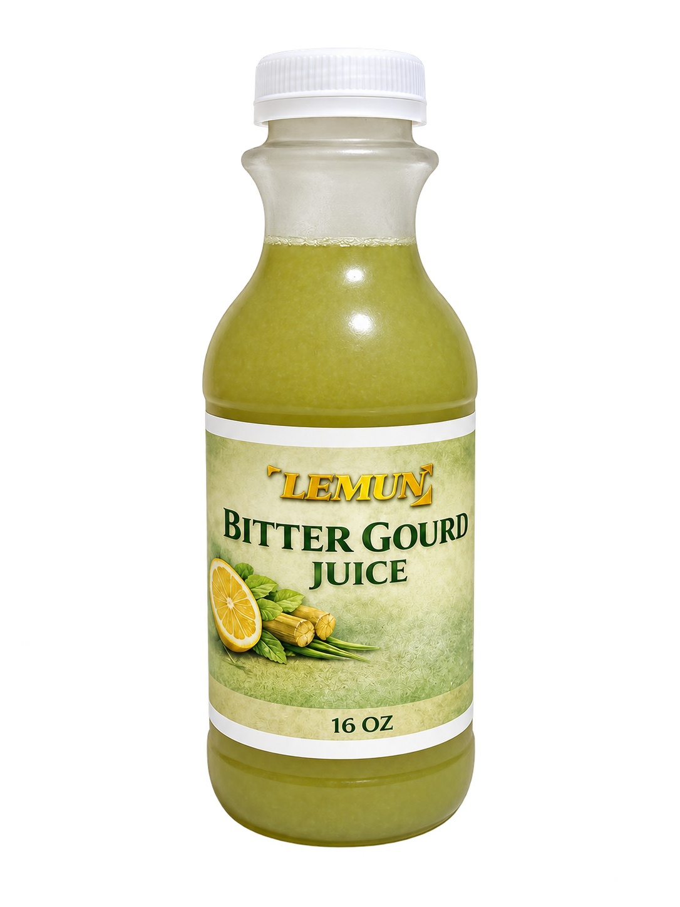
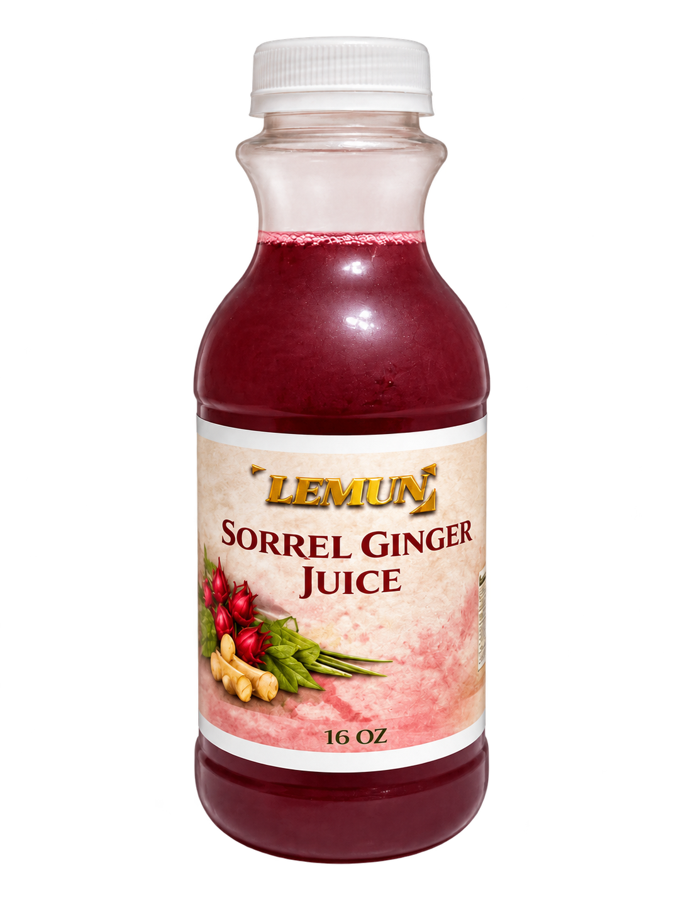
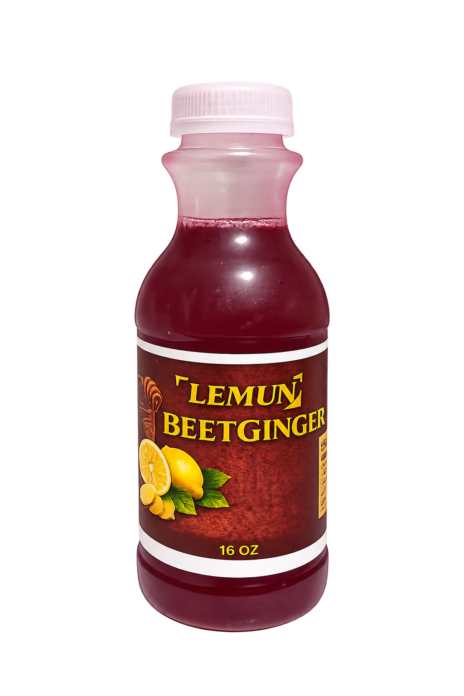
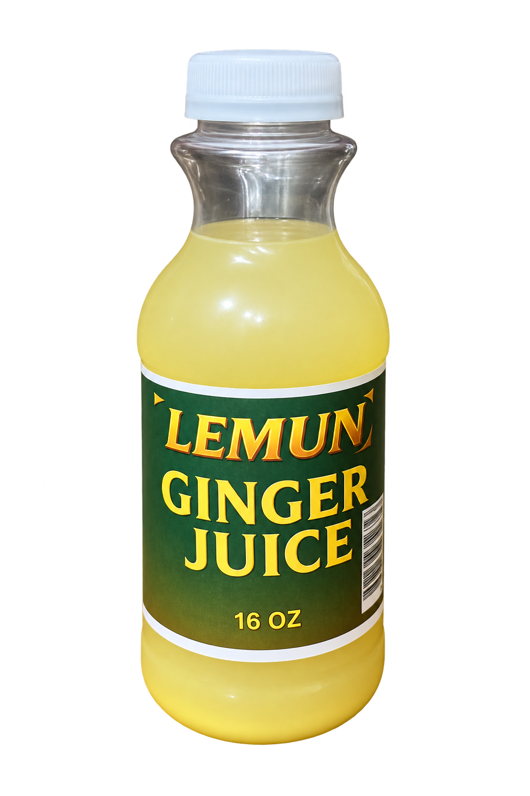
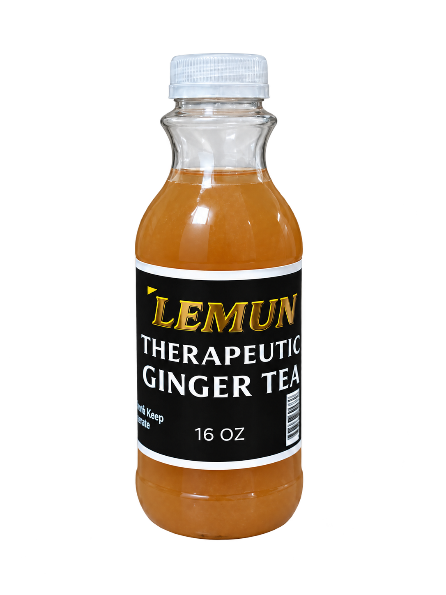
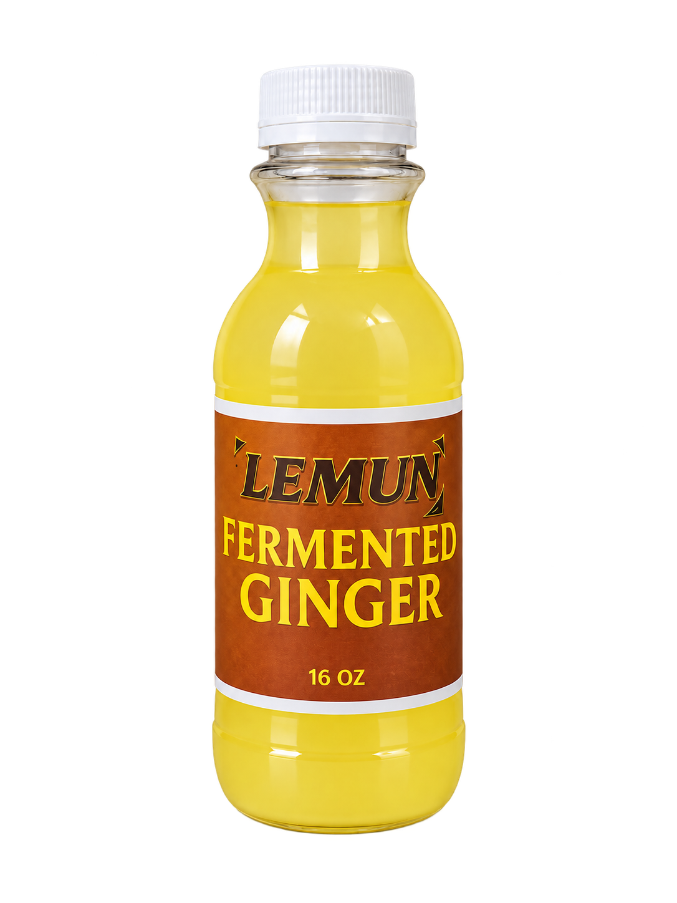
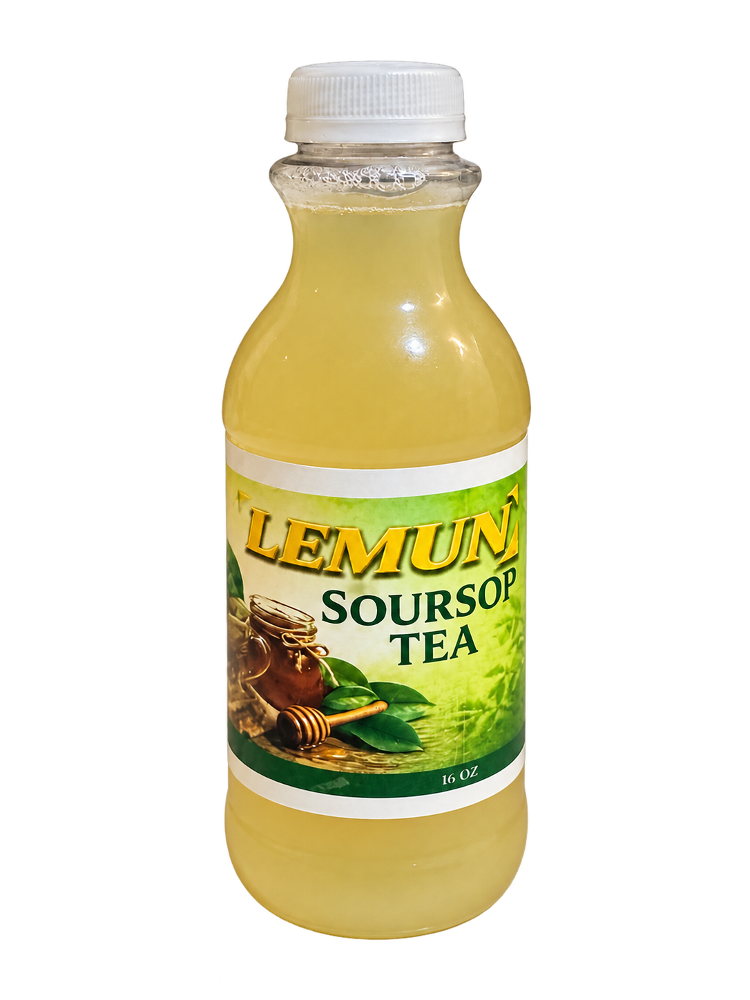

Apricot Ginger Juice
Fruit-forward. Ginger at its heart.
What’s inside Apricot Ginger Juice
- Organic ginger root
- Pineapple
- Apricot
- Cloves
- Lemon

Contact usROOTED IN NATURE. CRAFTED IN RALEIGH.
Fruits, roots, herbs, and a whole lot of flavor. Discover Lemun’s handcrafted collection of refreshing juices and teas.
Made fresh. Keep refrigerated. Enjoy the moment.
FRESH ROOTS. BOLD SPIRIT.
01 / Discover your next sip
Eight distinctive drinks. One naturally curious collection. Explore a familiar favorite or discover something new. See what goes into every bottle, then ask us about current availability, sizes, and pricing.

Fruit-forward. Ginger at its heart.

A bold take on refreshment.

Deep color. Distinctive character.

Earthy meets ginger.

For the ginger lovers.

Discover our ginger tea.

A different side of ginger.

Meet your next tea ritual.
Our drinks are made fresh. Keep refrigerated. For allergen questions, please contact us before choosing your drink.
02 / Our story
Lemun is a Raleigh-based beverage company creating handcrafted drinks with real fruits, roots, herbs, and spices.
We believe refreshing drinks should be delicious. Quality, freshness, community, and customer well-being guide what we make—and how we share it.
Get to know Lemun →03 / In your neighborhood
Find Lemun at these Raleigh and Cary locations. Selection and stock may vary; check with the retailer before visiting.
1409 Cross St.
Raleigh, NC 27610
4701 Atlantic Ave #111
Raleigh, NC 27604
6109 Rock Quarry Rd Ste 105
Raleigh, NC 27610
1435 SE Maynard Rd
Cary, NC 27511
3540 Maitland Dr
Raleigh, NC 27610
6715 Hillsborough St Ste 100
Raleigh, NC 27606
04 / Made for gathering
Weddings, parties, corporate events, and large orders. Let’s talk about drinks for your next gathering.
Please contact us at least two weeks ahead to discuss pricing, availability, and ordering details.
Plan your event ↗05 / Grow with us
Have a store, restaurant, or business? Connect with Lemun to discuss carrying or serving our drinks.
Tell us about your business, location, and the products you’re interested in.
Explore wholesale ↗06 / Let’s connect
Ask about a drink, pickup, an event, or a wholesale opportunity.
(919) 798-4039 ↗sales@lemundrinks.com ↗Send us a text →Serving Raleigh, Cary, Morrisville, Apex, Holly Springs, Fuquay-Varina, Durham, and surrounding areas.